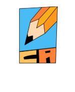
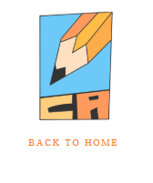
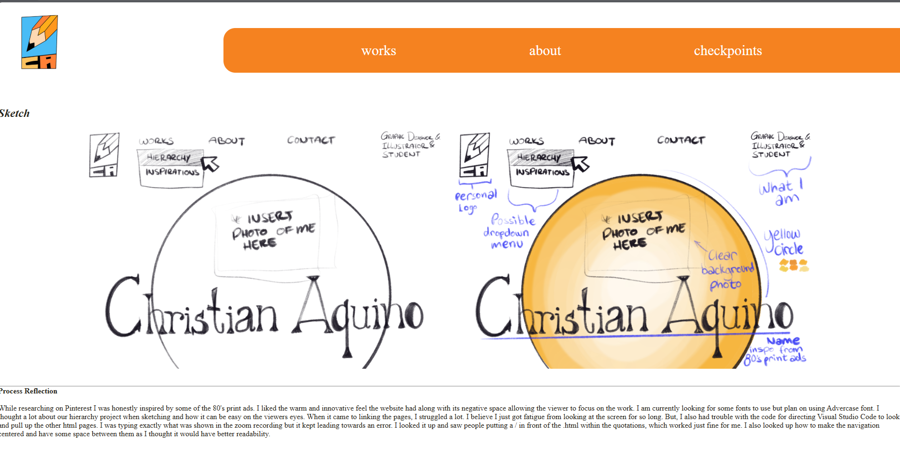
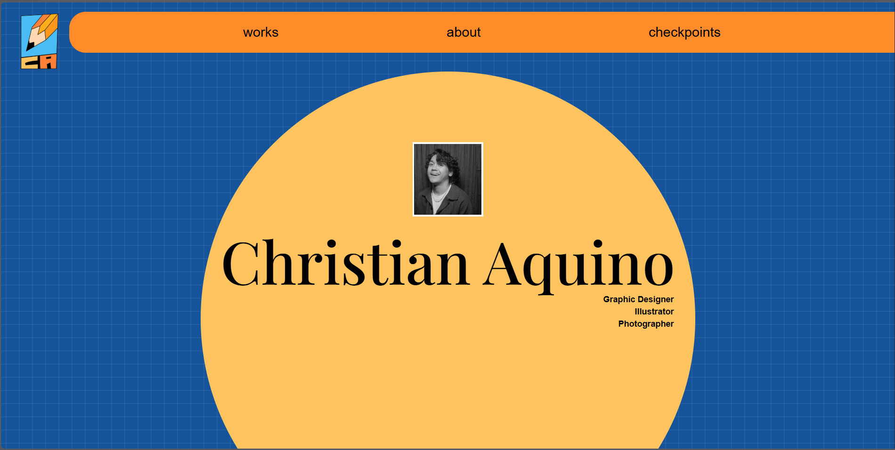

Entry 1
After meeting with my classmate Chloe during a breakout room
to discuss our websites and do a peer review, one of the things
she pointed out for me to work on is my formating. I knew it was
something I needed to work on so decided to start working on it
first so I stay organized going forward. I started formating my
HTML on my about, checkpoint 1 and now 2, and inspiration page.
In the picture above I show a screenshot of the HTML code for
checkpoint 1 showing how I am formating my code to be more organized.
Entry 2


Something that Chloe along with Aaron and a few others had mentioned
when looking at my website is that its not evident that my logo is actually
a button to go back to the home page. So I coded in css to have a hovering
responsive design to show the text: back to home. I think this helps make it
clearer when people hover over it. I also made it have a white background for
when I change the background of some of the pages or to accomodate for the pages
that already have a different colored background. I also made the text orange
to kind of match the navigation bar.
Entry 3
As said in Entry 1 one of the things I needed to work on was organization with
my content. I know before my text was all locked towards the left and was in a
weird poisition when enlarging and minimizing the window. I made most of the
content in the middle but most importantly I also added a section for the
process reflection with its own title to show emphasis that it is different
than the content that is in the main body. I continue to use this section /section
for the entries in my checkpoint to have better seperation while also keeping it
subtle.
Entry 4


As we are moving in completing our website I decided to put a bit more effort to my
home page! In the screenshot on the left you can see the the original along with some
sketches on what I wanted it to look like. The right side is the completed and refined
version. I originally wanted more in there but realized just how much coding it involved
for just this reskin alone. I am still catching up in my other assignments but sort of use
this as a break inbetween them to cook up some aesthetics with my website.